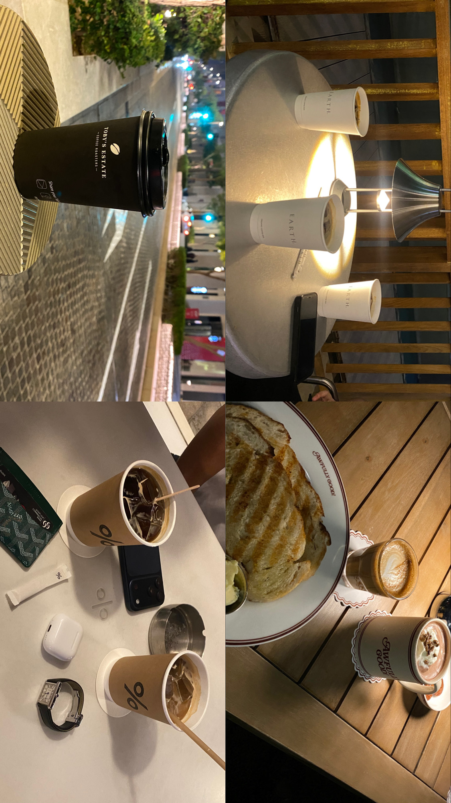
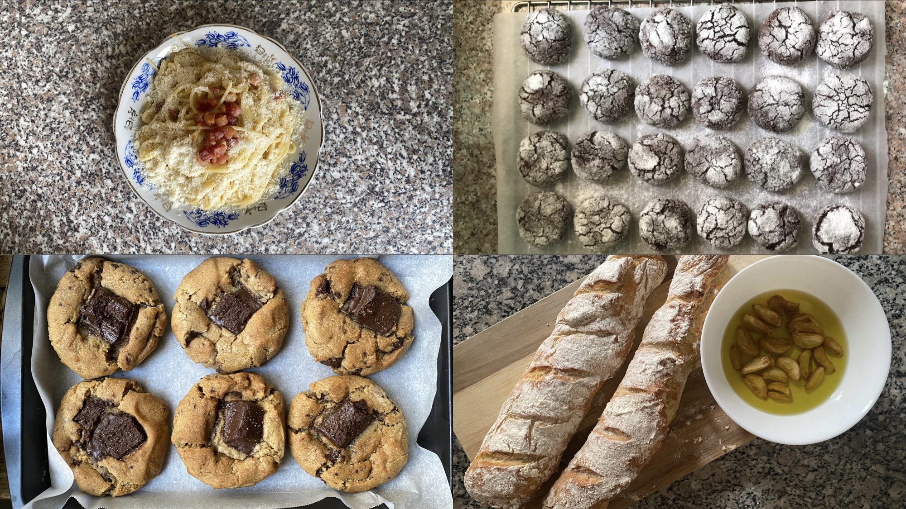
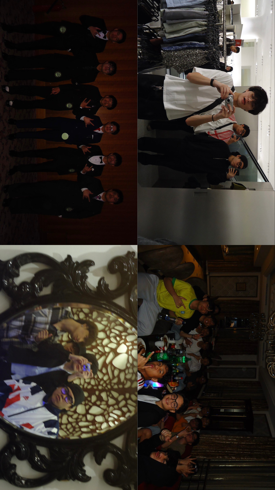

Sharing the things what I love in my life.
Welcome to my personal blog, where I share stories about what I love to do in my everyday life!
Hello! My name is Josh, I'm a college student at FEU Roosevelt living here in the middle east for over 7 years, I have plenty of stories that I would love to share from how I love drinking coffee to baking and even hanging out with my friends.

Date: October 14, 2026
I love coffee despite getting headaches and palpitating because of it. I got really addicted on drinking coffee that it worsens my anxiety. So I limit my coffee inntake from drinking 3 cups a day to 0. Now I only drink it when I need that certain boost of energy, when I hangout with my friends and family or when I try out new cafes in the city.

Date: September 17, 2026
I'm a type of person who loves sweets so much and have the passion of cooking being a part time chef in a michelin starred restaurant. I love baking and cooking for my family and friends, and I enjoy experimenting with new recipes and different flavors. It's a great way to express my creativity and share my love for food with others.

Date: October 14, 2026
Spending time with my friends is one of the most enjoyable parts of my life. We barely get to see each other now because we're all busy with our studies and work, but when we do, we create lasting memories together while sharing stories and experiences. And we all know that a great hangout is when you barely got pictures of the time when you were together.
Feel free to contact me through my social media accounts.
Instagram: @jshpmtl
Facebook: Josh Pimentel